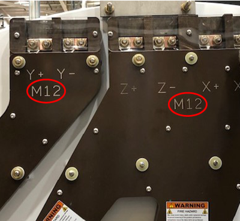
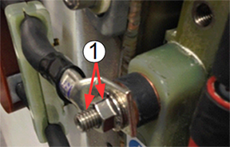

- 00000018WIA30C8F030GYZ
- id_123734051.33
- Dec 12, 2024 3:08:54 AM
Replacing XRMw cable busbars
Prerequisites
| Personnel requirements | |||
|---|---|---|---|
| Required persons | Preliminary requirements | Procedure | Finalization |
| 2 | 30 minutes | 5 hours | 2 hours |
| Tools and test equipment | |||
|---|---|---|---|
| Item | Quantity | Part number | Manufacturer |
| Arc Flash PPE | 1 | - | - |
| PPE: non-magnetic safety shoes, safety glasses, and gloves | 1 | - | - |
| Nonmagnetic Titanium Service Tool Kit, Large Set | 1 | 5112581 | - |
| Torque Wrench, 8 to 50 N m Adjustable, Nonmagnetic | 1 | 5534134 or 5534134-2 | - |
| Nonmagnetic 80 N m Fixed Torque Wrench Kit | 1 | 5790177 | - |
| Consumables | |||
|---|---|---|---|
| Item | Quantity | Part number | Manufacturer |
| Loctite #243 (10 ml) (check expiration date) | 1 | 5415261-2 | - |
| Alcohol Wipes | As needed | - | - |
| Black Sharpie Pen | 1 | - | - |
| Replacement parts | |||
|---|---|---|---|
| Item | Quantity | Part number | Manufacturer |
| XZ XRMw Busbar | 1 | See FRU Manual | - |
| Y XRMw Busbar | 1 | See FRU Manual | - |
| Required conditions |
|---|
| At least one individual doing this procedure must have taken training course GEHC-TECH-AMOL-CT530-01_CURR. |
| Safety | ||||||||
|---|---|---|---|---|---|---|---|---|
|
Before working in any GE HealthCare MR suite or doing any GE HealthCare service procedure, you must:
If you have any safety concerns at any time, do not begin work or immediately stop work and move to a safe location. Immediately contact your supervisor or site safety officer for instructions on how to proceed. | ||||||||
| ||||||||
About this task
Overview
This procedure describes the replacement or installation process for the eXtreme Resonance Module Revision W (XRMw) busbars.
The system has two busbars: the XZ busbar assembly and the Y busbar assembly. Typically, only one busbar is replaced at one time.

| XZ busbar replacement | Y busbar replacement | |
|---|---|---|
| Gradient replaced | M12, 5845904 | M12, 5845905 |
| Gradient not replaced; current busbar has an M12 indicator | ||
| Gradient not replaced; current busbar has an M10 indicator | M10, 5508397 | M10, 5508398 |
Getting started
Procedure
Removing busbars
About this task
Typically only one busbar is replaced at a time. The removal and installation processes for Y and XZ busbars are the same. If a different instruction is necessary, the instruction is labeled specifically for Y or XZ.
Procedure
- Remove the safety covers from the end of the Y and XZ busbar
cable connections.
Each of the three safety covers is held in place with an M10 x 60 mm stainless steel screw and a G10 (glass-reinforced) washer. Inside each safety cover is a white cloth. Do not discard the white cloth or the fastener.
Figure 2. Safety cover on the busbar cable connection 
Figure 3. Y and XZ busbar cable connections 
1 Y busbar cable connections 2 X busbar cable connections 3 Z busbar cable connections - Note DO NOT remove the clamps on the busbar leads.NoteIf you are removing an M10 busbar (no M12 indicator on the busbar face), remove the M10 nuts and Nord-Lock washers that secure the busbar lugs to the coil. If you are removing an M12 busbar (M12 indicator on the busbar face), remove the M12 SmartBolts and Nord-Lock washers that secure the busbar lugs to the coil. Slide the busbar terminal lugs off of the studs at the coil.
Never use the nonmagnetic torque wrench to loosen connections. The torque wrench has a range of 10 to 50 N m (8 to 35 lb-ft), and removing Nord-Lock© or Spiralock© threads may exceed the limit of this wrench and destroy the ratchet components.
Figure 4. M12 indicator 
- (For Y busbar) Remove two nuts or SmartBolts and two Nord-Lock washers.
- (For XZ busbar) Remove four nuts or SmartBolts and four Nord-Lock washers.
Discard the Nord-Lock washers and stainless steel flange nuts or SmartBolts.
Figure 5. SmartBolt connections 
Installing busbars
About this task
Typically only one busbar is replaced at a time. The removal and installation procedure for Y and XZ busbars are the same. If a different instruction is necessary, the instruction is labeled specifically for Y or XZ.
Procedure
DANGER Notice Notice
Set the torque wrench appropriately:Notice - (For M10 nut/stud configuration) Set the torque wrench to 25 ft-lbs (33.9 N m), and install a 15 mm socket onto the extension.
- (For M12 SmartBolt configuration) Set the torque wrench to 59 ft-lbs (80 N m), and install a 19 mm socket onto the extension.
Note Make sure that the arrow on the torque wrench is visible. If the arrow is not visible, the torque wrench will not “click” when the proper torque is reached.Figure 14. Arrow on nonmagnetic torque wrench 
- (For M10 nut/stud configuration) Using a Sharpie pen, place a line from the base of the stud to the nut.
Figure 15. SmartBolt 
A red indicator means the SmartBolt is not torqued, as shown above; a black indicator means the SmartBolt is torqued.
Figure 16. Stud and nut or SmartBolt marked to show torque position 
1 Black line on nut and stud to show torque position. Repeat this process for all terminal connections.
- Install the safety cover.
- Inspect the flame-retardant material (white cloth) for tears or internal damage. Replace the safety cover if the liner is damaged. See the FRU list for the part number.
- Make sure the flame-retardant material (white cloth) is folded out around the edges of the safety cover. There should be no openings between the safety cover and the gradient coil.
- Install the safety cover assembly over each set of terminals. Install with an M10 stainless steel fastener and M10 plain flat washer. Tighten the screw.
Figure 17. Cable terminal studs for Y and XZ busbars 1 Y busbar cable terminal studs 2 XZ busbar cable terminal studs 3 XZ busbar cable terminal studs
Finalization
Procedure
- Install the rear end bell enclosure. See Rear End Bell Removal and Installation.
- Install the rear pedestal.
- Install the patient bridge. See Bridge and Longitudinal Drive Belt Replacement.
- Replace all covers that were previously removed.
- Remove lockout/tagout to turn the system ON. Refer to the MR Service Safety Manual (5452735).
- Do DQA II to verify proper geometry. See DQA II Tool and Troubleshooting.